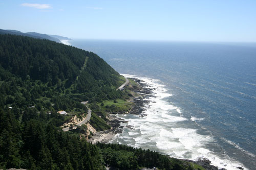
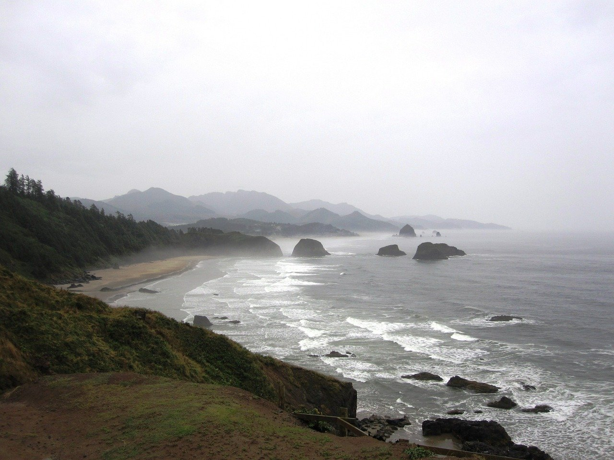
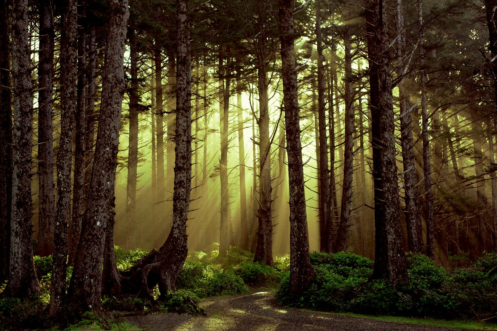
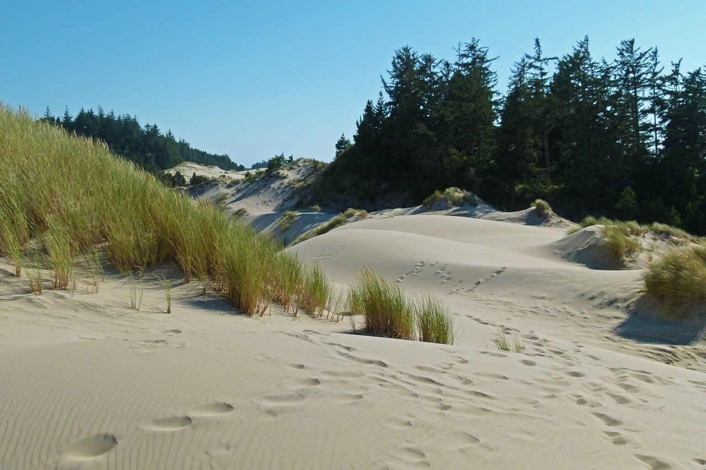

Hike the Coast
|  |
Cape Perpetua A steep but rewarding 2.2 mile round-trip hike to see some of the best views on the Oregon Coast. Located just outside of Yachats, OR. image source: Wikimedia Commons |
| Ecola State Park For ambitious hikers, Ecola State Park offers 8+ miles of hiking trails. The most popular hiking destinations are Ecola Point (where you can find more great views) and Indian Beach, but there is plenty more here to explore. Located in the Tillamook wilderness, close to Seaside, OR. image source: Pixabay |
 |
|  | Hobbit Trail If you want to enjoy the mysterious coastal forest of the Pacific Northwest, the Hobbit Trail is your best bet! A 4-mile round-trip hike starting just off of Highway 101 near Florence, this trail leads hikers through thick trees before ending up at the Heceta Lighthouse. image source: Pixabay |
| Dunes Overlook Trail Also near Florence, this trail leads through the Oregon Dunes to the beach. The trailhead doubles as a great viewpoint. Along the way, you can enjoy great scenery and play in the dunes. image source: Pixabay |
 |
{kind=link}